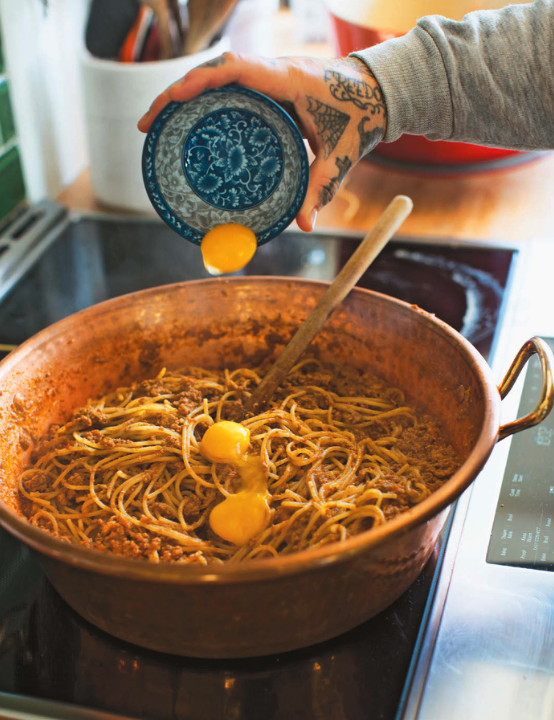

One-Hour Bolognese

Description
As I'm writing this, I'm really feeling how fast you can make great meals around quick pasta, and this one is
fast and easy and will make you look like you spent all day working the stoves. Bolognese is a house-to-house
dish: every person in every town in Italy has a ragù, sugo, or bolo, and this is my fast and easy one-hour take.
You could make it a few different ways, but one thing you should keep constant is that it should be saucy, like
sludge in the best kind of way. Using carrot, onion, garlic, tomato paste, beef stock, and browned beef and
finishing with milk and egg yolks is my favorite. Use any noodle you love—tagliatelle, pappardelle, bucatini,
penne, gnocchi—or serve it on warm buttery and cheesy polenta.
Ingredients
- 1 pound (450 g) carrots, peeled and finely chopped
- 1 white onion, finely chopped
- 1 head garlic, cloves sliced
- 1/2 cup (120 ml) olive oil
- 2 pounds (900 g) ground beef
- 1/4 cup (60 ml) tomato paste
- 2 quarts (2 L) Beef and Bone Marrow Stock, or store-bought
- 1 cup (240 ml) whole milk
- 4 egg yolks
- 1 tablespoon freshly cracked black pepper, or to taste
- Kosher salt
- 12 ounces (360 g) dried spaghetti
- 1 cup (100 g) grated Parmesan cheese
Cooking Instructions
- In a medium Dutch oven, combine the carrot, onion, garlic, and olive oil. Cook over medium-low heat until
the onions are translucent but the vegetables do not take on color, about 12 minutes.
- Add the ground beef, stir to work it up (but do not brown it), and cook for 5 minutes.
- Add the tomato paste and cook for 5 minutes.
- Add the beef stock and reduce until sludgy and emulsified.
- Add the milk, reduce for 5 minutes, then add the egg yolks and stir until glossy.
- Add the pepper and season with salt.
- Fill a large saucepan with heavily salted water; bring to a boil. Throw in the spaghetti and boil for 8 to
10 minutes, or until al dente.
- Strain in a colander, reserving 1/2 cup (120 ml) of the pasta water.
- Add the cooked pasta to the pot of Bolognese and stir until the spaghetti is coated in sauce. Adjust the
consistency as needed using the reserved pasta water.
- Using tongs, twirl one-quarter of the noodles into a tight bundle and transfer to a serving plate. Repeat 3
more times to make 4 servings. Spoon the remaining sauce evenly onto the plates.
- Sprinkle with the cheese and boom. ONE-HOUR BOLO!